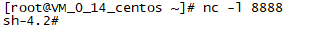

0x00 前言
前段时间刚好看了p师傅的《Python安全 - 从SSRF到命令执行惨案》，没想到这次pwnhub公开赛就碰到了，思路几乎一模一样，都是通过ssrf结合python urllib的http头注入漏洞，对redis进行利用。
本人总结的原文思路如下图：
0x01 SSRF
随意注册账号后进入系统，检查了一遍只有一个 flag-spider功能，让输入url。猜测是考ssrf。
测试了几个地址，发现
可以连接到远程vps。
可以使用file:///协议读取本地文件，尝试读取常见flag路径，不出意外是失败的，应该是改名了。
6379端口开放redis服务
0x02 代码审计
使用file协议file:///proc/self/cmdline读取运行命令，发现是用gunicorn服务器启动了run.py文件。
1 | gunicorn --config=config.py run:app |
读取run.py ：
根据源码中import的模块，将user.py、sipder.py都读取下来，本地搭个环境进行测试。
首先看flag-spider功能的逻辑，定位到run.py中spider函数：
1 | @ app.route('/spider/', methods = 「'GET', 'POST'1) |
分析spider函数可知：
- 获取cookie，如果cookie验证通过且redis存在，则获取redis中cookie对应的值进行反序列化
- 如果method不为get且传入url参数，则调用Spider类对url进行爬取。
再看Spider类:
1 | import urllib |
可以看出Spider类使用了urllib库对目标url发起请求，而这个库恰好也是p师傅文章中利用的一个点。
注册逻辑：
1 | @ app.route('/register/', methods = ['GET', 'POST']) |
- 访问页面时先根据cookie在redis中查找key，若有则进行反序列化。
- 用户注册时，根据user生成一个hash值，再拼接user作为cookie
- User对象反序列化存储到redis中，对应的key就是cookie
本地测试注册后redis中的数据：
猜测肯定就是要利用反序列化漏洞了。思路就是将redis中用户对应的的key设置为序列化后的payload，然后重新访问页面触发。
接下来需要解决如何设置redis中的任意key，也就是找到urllib漏洞。
0x03 Python urllib3.5 CRLF注入
通过发送http请求对redis进行利用方式是，在请求包协议行后（也就是第二行）插入redis命令：
1 | GET / HTTP/1.1 |
那么如果控制了http请求头，就可以在redis中执行set命令，将key设置为paylaod。
从服务器发送到vps的请求头看，目标服务器用的是urllib3.5版本。
在本地下载python3.5.0，测试如下：
- CVE-2016-5699(失败):
http://[vps-ip]%0d%0aX-injected:%20header:8888 - CVE-2019-9740(失败):
http://[vps-ip]%0d%0a%0d%0aheaders:8888 - CVE-2019-9947(失败):
http://[vps-ip]:8888?%0d%0apayload%0d%0apadding - CVE-2019-9740(成功):
http://[vps-ip]:8888?%20HTTP/1.1%0d%0aCONFIG SET dir /tmp%0d%0aTEST: 123:8080/test/?test=a
payload：
1 | http://127.0.0.1:6378?%20HTTP/1.1%0d%0aCONFIG SET dir /tmp%0d%0aTEST: 123:8080/test/?test=a |
本地在burp中测试了多次（\r\n要url编码），返回报错：
但是服务器上成功创建了文件：
对比赛服务器进行测试，写入到/tmp/qweqwe文件，再用file:///tmp/qweqwe读取。
报utf-8 code can't decode byte xxx，说明文件写成功。
0x04 Redis利用
接下来尝试修改redis中的key。
本地测试payload:
1 | #!/usr/bin/env python |
redis中反弹shell写入成功：
触发反序列化
1 | curl -X POST 'http://127.0.0.1:5000/spider/' |
成功反弹shell：

远程测试发现建立了连接，但是并没有shell。尝试备用地址才反弹成功，不知道什么原因= =。

最终在根目录下发现flag文件。